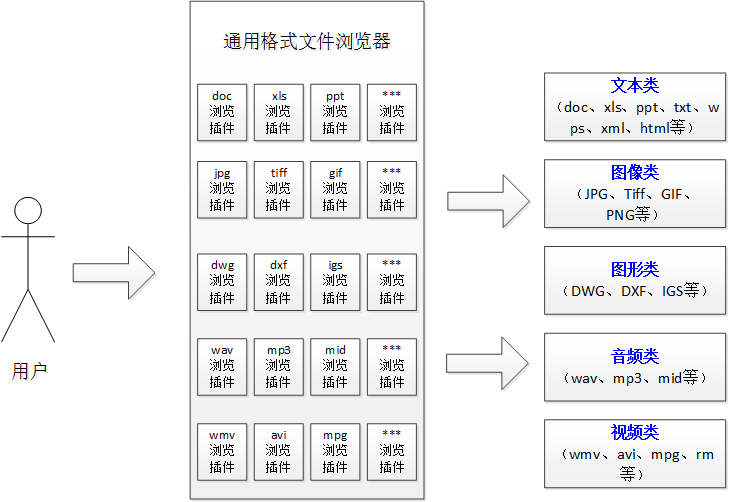
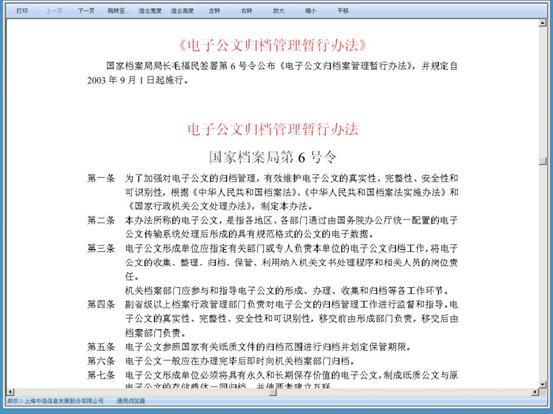
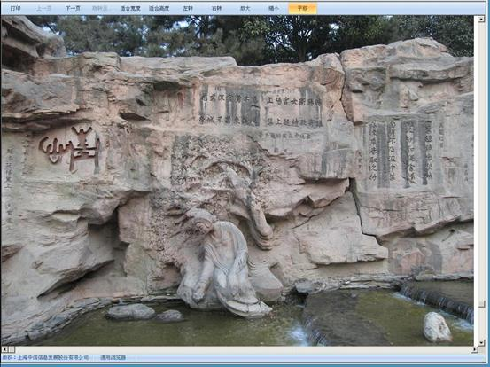
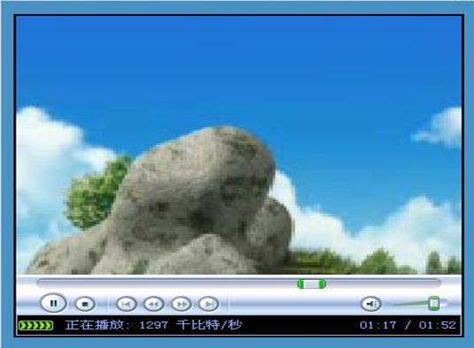

电子文件通用浏览器
随着电子政务建设的不断推进和逐步深入，各种电子文件格式大量产生，如 文档、网页、图片、音乐、视频等等，用户客户端机器需要预装各种电子文件对应的软件，否则将不能浏览该电子文件，这给用户在线浏览电子文件带来了很大不便。为了解决这一问题，存在两种解决办法：
- 将各种格式文件转换成一种或者多种通用格式，比如将文本文件、图像文件、图形文件转换成PDF文件；将音视频文件转换成FLV文件。我司的文件格式转换工具已经实现此功能，在用户对于目标文件格式有明确要求的情况下可以采用这种方法；
- 开发通用格式文件浏览器，在一个浏览器中能够浏览各种格式的电子文件。在用户不想改变原始文件格式，只想对其进行方便、快捷的利用时可以采取这种方法。
通用文件浏览器要实现支持多种电子文件浏览的功能，实质需要针对每一种电子文件格式开发相应的浏览插件。当用户利用通用格式文件浏览器访问电子文件时候，通用文件浏览器自动调用对应的电子文件浏览插件，进行浏览。系统实现原理如下图所示：

如果在通用文件浏览器插件库中没有该电子文件的插件，或者新出现一种电子文件格式，则通用文件浏览器不能浏览该电子文件，需要增加新的浏览插件。我们在系统设计时已经充分考虑扩展性，采用工厂模式进行架构设计，保证新增插件时不会对原有格式浏览造成影响。
各类文件格式的浏览功能说明如下：
（1）文本类
- 所有文本型文件：txt、xml、html等；
- 二进制文件：doc、xls、ppt、wps、pdf等。

对文本文件提供以下浏览功能：
- 1. 打印：打印该文件，本按钮支持权限控制，实现打印控制；
- 2. 上一页：浏览文件上一页内容；
- 3. 下一页：浏览文件下一页内容；
- 4. 跳转至：浏览文件的指定页内容；
- 5. 适合宽度：文件一页的显示宽度适应当前窗口宽度；
- 6. 适合高度：文件一页的显示高度适应当前窗口高度；
- 7. 放大：文本文件显示比例放大；
- 8. 缩小：文本文件显示比例缩小。
（2）图像类
- bmp、jpg、jpeg、tif、tiff、gif、png、pdf等。

对图像文件提供以下浏览功能：
- 1. 打印：打印该图像文件，本按钮支持权限控制，实现打印控制；
- 2. 上一页：浏览图像文件上一页内容；
- 3. 下一页：浏览图像文件上一页内容；
- 4. 适合宽度：图像文件显示宽度适应当前窗口宽度；
- 5. 适合高度：图像文件显示高度适应当前窗口高度；
- 6. 左转：图像逆时针旋转90°；
- 7. 右转：图像顺时针旋转90°；
- 8. 放大：图像文件显示比例放大；
- 9. 缩小：图像文件显示比例缩小；
- 10. 平移：当文件显示比例大于窗口时，移动显示当前图像文件的局部内容；
- 11. 缩放：可以通过框选方式，实现图像文件的局部放大和缩小。
（3）图形类
- 支持对AutoCAD、Microstation、HPGL等各种软件的2D文件；
- 支持对ProEngineer、Unigraphics、SolidWorks、Catia、SolidEdge、Autodesk等各种软件的3D文件。
对图形文件提供以下操作：
- 1. 支持 3D CAD 和 2D CAD 格式的浏览；
- 2. 平移、旋转和操作 3D 模型并查看其 2D 模型和草图；
- 3. 支持剖视和分解 3D 模型和装配体。
（4）音视频类
- wav、mp3、mid等；
- wmv、flv、mpg、rm、avi等。
对音频文件提供以下操作：
- 1. 播放：播放此音频文件；
- 2. 暂停：暂停此音频文件；
- 3. 音量：调整此音频文件的声音大小。

对视频文件提供以下操作：
- 1. 播放：播放视频文件。
- 2. 暂停：暂停视频文件的播放。
- 3. 全屏：视频文件播放窗口最大化。
- 4. 音量：调整视频文件的声音大小。
主要特点：
- 1. 以浏览器插件的方式提供，可以方便的嵌入各种常见版本的浏览器，比如IE7/8/9，FireFox3/4，Chrome16+等；
- 2. 无需电子文件的原始生成软件支持，就可以支持对200多种常见文件格式的浏览，包括文本类、图像类、图形类、音视频类等各种类别；
- 3. 针对不同类别文件提供不同的浏览功能，比如针对图像可以缩放，针对图形支持3D旋转，针对音视频可以快进等等；
- 4. 除了浏览功能之外，系统还提供电子文件客户端利用安全控制功能，包括防打印下载、添加水印等。